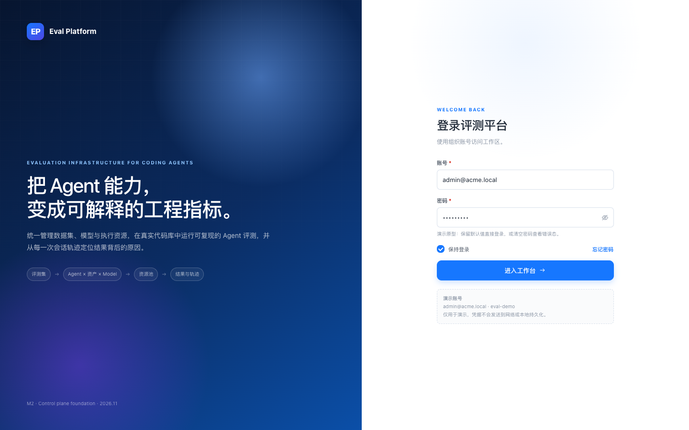
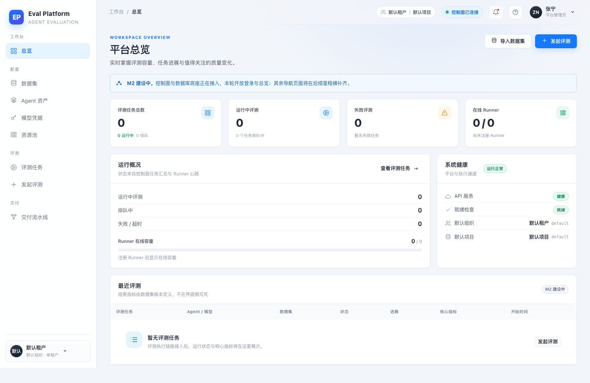
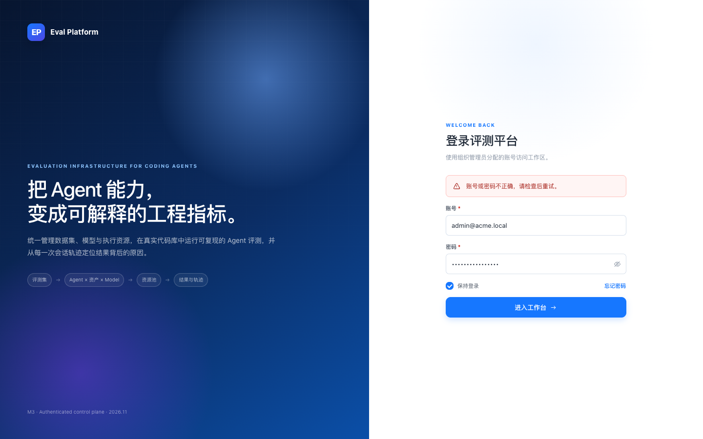
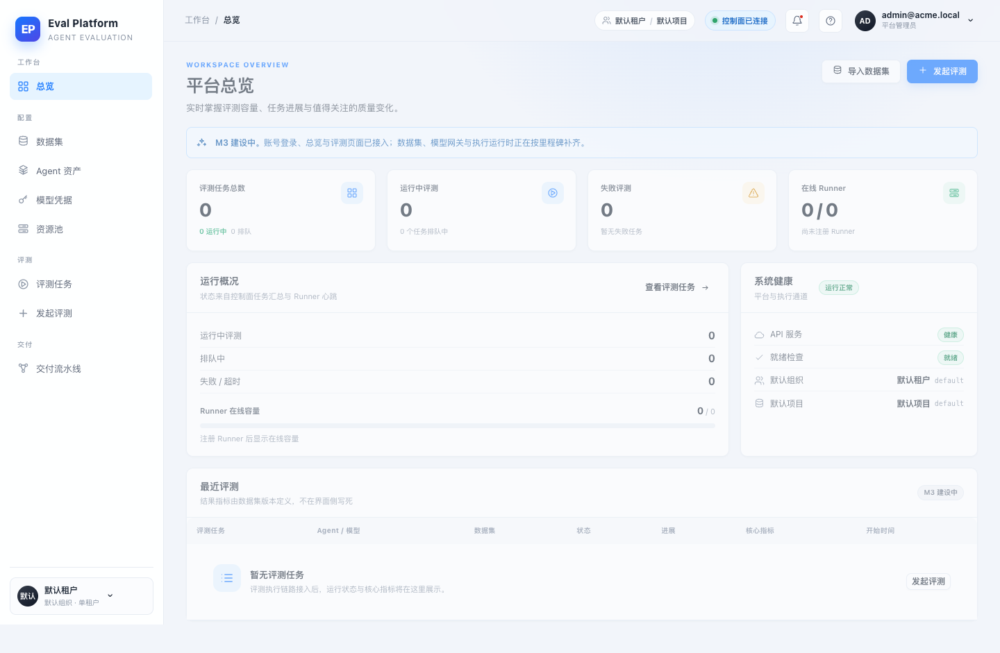
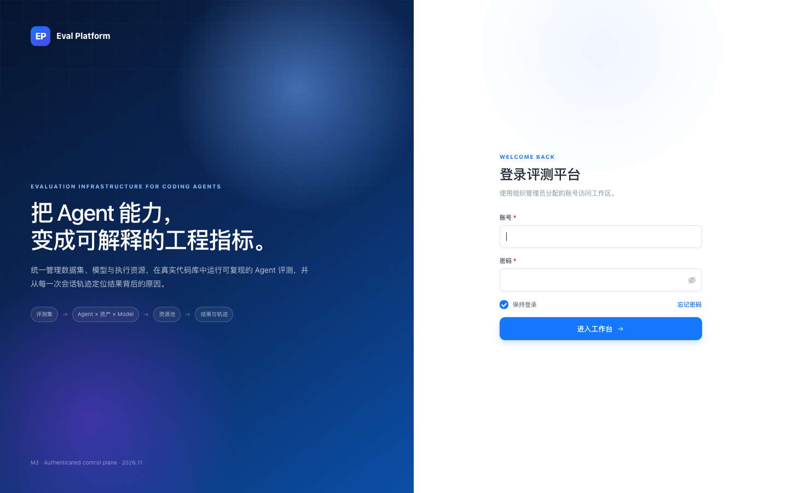

- Branch
- agent/implement-m3-auth-81d2cbabf1aa
- Web
- http://127.0.0.1:5174 (vite dev)
- API
- http://127.0.0.1:8000 (uvicorn)
- Database
- SQLite + Alembic 0005_identity
- Baseline
- 0adde90 (main merge PR #50)
Computer Use Smoke · M3-05
M3-05 账号密码登录与会话鉴权 · 浏览器 Smoke
在真实 uvicorn + SQLite（迁移到 0005_identity）与 Vite 开发服务器上完成登录前后对照：基线的演示登录与匿名总览可复现；实现后未登录深链跳转登录、错误密码明确失败、正确登录回到原目标页、退出后旧 Cookie 失效，控制面 API 与角色边界均按预期工作。
11/11场景通过
2角色验证
0明文凭据
1440×900统一视口
Environment and Artifact
2026-11-09 · macOS · Chrome headless 1440×900 · 中文/浅色主题Scenario Matrix
1 info · 1 warn · 9 pass| # | 场景 | 结果 | 细节 | 证据 |
|---|---|---|---|---|
| 01 | 基线演示登录页 | BASELINE | 改动前登录页预填 admin@acme.local / eval-demo，仅前端跳转，不发请求。 | before-login.png |
| 02 | 基线匿名访问总览 | DEFECT | 改动前直接打开 /overview 可匿名查看真实数据，/api/v1/overview 返回 200。 | before-overview-anonymous.png evidence/01-anonymous-overview.status |
| 03 | 登录页去除演示凭据 | PASS | 登录页不再预填或展示演示账号，文案说明使用管理员分配账号。 | after-login.png |
| 04 | 未登录深链跳转 | PASS | 未登录打开 /overview 跳到 /login?next=%2Foverview，登录后回到 /overview。 | after-deep-link.png |
| 05 | 错误密码失败态 | PASS | 错误密码返回 401 invalid_credentials，页面显示“账号或密码不正确，请检查后重试。”。 | after-login-error.png |
| 06 | 正确登录与身份展示 | PASS | 登录返回 200，顶栏显示 admin@acme.local / 平台管理员，/api/v1/overview 返回 200。 | after-overview-authenticated.png |
| 07 | 退出登录与旧会话失效 | PASS | 退出后回到 /login；把旧 Cookie 写回浏览器再请求 overview 返回 401。 | after-logged-out.png evidence/06-revoked-session.status |
| 08 | 匿名控制面 API | PASS | 未登录 GET /api/v1/overview 返回 401 unauthenticated 错误封套。 | evidence/01-anonymous-overview.json evidence/01-anonymous-overview.status |
| 09 | 管理员与只读角色边界 | PASS | viewer 可读总览（200）但创建评测返回 403；admin 创建评测返回 201。 | evidence/10-viewer-write-forbidden.json evidence/04-admin-create-eval.status |
| 10 | Runner 平面不受控制面会话影响 | PASS | 不带控制面 Cookie 的 Runner 心跳仍返回 200，继续使用自身令牌体系。 | evidence/07-runner-heartbeat.status |
| 11 | 落库凭据形态 | PASS | 密码为 scrypt 哈希，会话只存 64 位 token hash；登录/退出写入 audit_log。 | evidence/11-storage-inspection.txt |
Issues and Observations
No defects foundNo defects were found.
Evidence
7 screenshots





Automated Coverage Assessment
3 areas reviewed| 区域 | 覆盖 | 结论 | 建议 |
|---|---|---|---|
Conclusion
Ready with deployment follow-up登录、会话与控制面访问控制已在真实浏览器与 API 上验证；生产部署仍需配置初始管理员密码，并在启用 TLS 后打开 Secure Cookie。
- 生产首次部署需要 GitHub Secret AUTH_BOOTSTRAP_ADMIN_PASSWORD（可选 AUTH_BOOTSTRAP_ADMIN_EMAIL），否则控制面没有可登录账号。
- 当前部署入口是 HTTP，AUTH_COOKIE_SECURE 保持 false；接入 TLS 后必须改为 true。
- 密码重置暂由 python -m app.manage set-password 执行，尚无独立重置页面。
M3-05 · 账号密码登录与会话鉴权 · 证据来自本地真实 uvicorn + Vite + Chrome headless